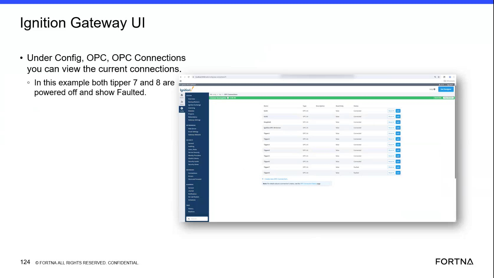

| Procedure ID | proc_check_tipper_active_communications_in_ignition_gateway_v1 |
|---|---|
| Title | Check Tipper Active Communications in Ignition Gateway |
| Procedure Type | diagnostic |
| Primary Role | L2_support |
| Support Safe | Yes |
| Capability Tags | opc_connection_or_tipper_heartbeat, gateway_health |
| Access Surface | ignition_gateway |
| Audience Roles | L2_support |
| Failure Pattern Tags | opc_connection_faulted, gateway_unhealthy |
| Validation Status | needs_sme_review |
| Merge Status | source_finalized |
Use the Ignition gateway web UI to inspect Configuration > Active Communications and verify the displayed power and fault state for Tipper 7 and Tipper 8.
Use this Ignition gateway diagnostic when investigating whether the live communications for Tipper 7 or Tipper 8 are powered on and communicating, or when the gateway communications state needs to be verified.

Responsible role: L2_support
Instruction:
In a web browser, open the Ignition gateway at http://localhost:8088/web/status/sys.perf.
Expected result:
The Ignition gateway system performance page opens and displays the gateway UI, including its performance and configuration areas.
Stop or Escalate If:
Responsible role: L2_support
Instruction:
In the Ignition gateway UI, open Configuration and then select Active Communications.
Expected result:
The Active Communications view opens and displays communication entries that can be inspected for the tippers.
Stop or Escalate If:
Responsible role: L2_support
Instruction:
In Ignition gateway Active Communications, locate the entries for Tipper 7 and Tipper 8 and observe each entry's displayed power and fault state.
Expected result:
A displayed state is available for both Tipper 7 and Tipper 8. The example state is powered off and faulted for both entries.
Stop or Escalate If:
Responsible role: L2_support
Instruction:
Record the displayed power and fault state for Tipper 7 and Tipper 8 from the Ignition gateway Active Communications view.
Expected result:
The recorded observation identifies the state of each tipper communication, including whether it is powered off and displayed as faulted.
Stop or Escalate If: